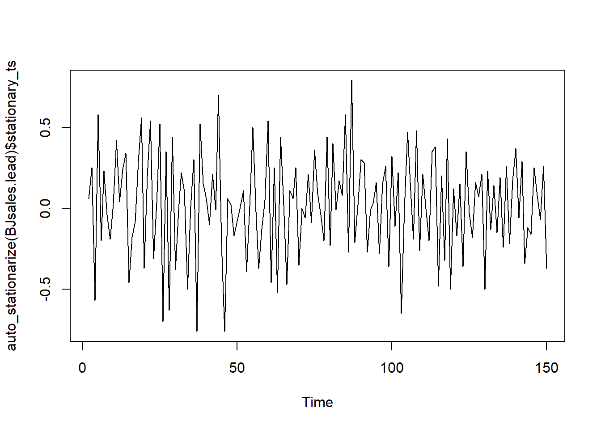

My R package {healthyR.ts} has been updated to version 0.3.0; you can install it from either CRAN, r-universe or GitHub. Let’s go over some of the changes and improvements.
News
1. util_log_ts() - Logging Time Series Data
One of the standout additions is the introduction of util_log_ts(). This function seems like a game-changer, providing a streamlined way to log time series data. This is incredibly useful, especially when dealing with extensive datasets, making the whole process more efficient and user-friendly. This is a helper function for auto_stationarize().
2. util_singlediff_ts() - Single Differences for Time Series
The addition of util_singlediff_ts() expands the toolkit, offering a function dedicated to handling single differences in time series data. This is valuable for various applications, such as identifying trends or preparing data for further analysis. This is a helper function for auto_stationarize().
3. util_doublediff_ts() - Double Differences for Time Series
Building on the concept of differencing, util_doublediff_ts() seems to provide a higher level of sophistication, allowing users to perform double differences on time series data. This could be pivotal in cases where a more refined analysis is required. This is a helper function for auto_stationarize().
4. util_difflog_ts() - Combining Differences and Log Transformation
The fusion of differencing and log transformation in util_difflog_ts() is a remarkable addition. This could be particularly beneficial in scenarios where both operations are needed to unlock deeper insights from the time series data. This is a helper function for auto_stationarize().
5. util_doubledifflog_ts() - Double Differences with Log Transformation
The introduction of util_doubledifflog_ts() appears to take things a step further by combining double differences and log transformation. This function seems poised to provide a comprehensive solution for users dealing with complex time series data. This is a helper function for auto_stationarize().
Minor Fixes and Improvements: Polishing the Experience
1. Attributes Enhancement in ts_growth_rate_vec()
The attention to detail is evident with the addition of attributes to the output of ts_growth_rate_vec(). This enhancement not only improves the clarity of results but also contributes to a more informative and user-friendly experience.
2. Refinement of auto_stationarize() in Response to User Feedback
Updates to auto_stationarize() based on user feedback (Fix #481 #483) demonstrate a commitment to refining existing features. This responsiveness to the community’s needs is commendable and ensures that the package evolves in sync with user expectations. It has taken all of the util_ transforms mentioned above in order to improve it’s functionality.
3. Integration with auto_arima Engine in ts_auto_arima()
The integration of ts_auto_arima() with the parsnip engine of auto_arima is a notable improvement. This update, triggered when .tune is set to FALSE, aligns the package with cutting-edge tools, potentially enhancing the efficiency and accuracy of time series modeling.
In conclusion, the release of healthyR.ts version 0.3.0 is an exciting leap forward. The new features introduce powerful capabilities, while the minor fixes and improvements showcase a commitment to providing a robust and user-friendly package. Users can look forward to a more versatile and refined experience in time series analysis. Great job on this release, and I’m sure the community is eager to explore these enhancements!
The time series is not stationary. Attempting to make it stationary...

ts_auto_arima()
This use to only use the Arima engine if the .tune parameter was set to FALSE, thus it would many times give a simple straight line forecast. This was changed to make the engine auto_arima if .tune is set to FALSE.